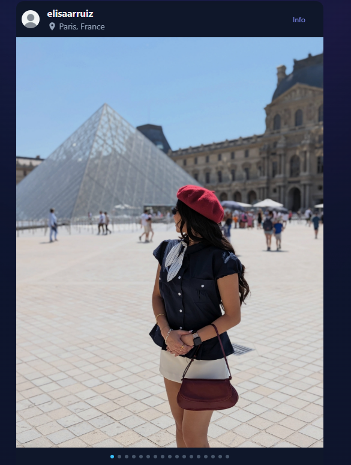
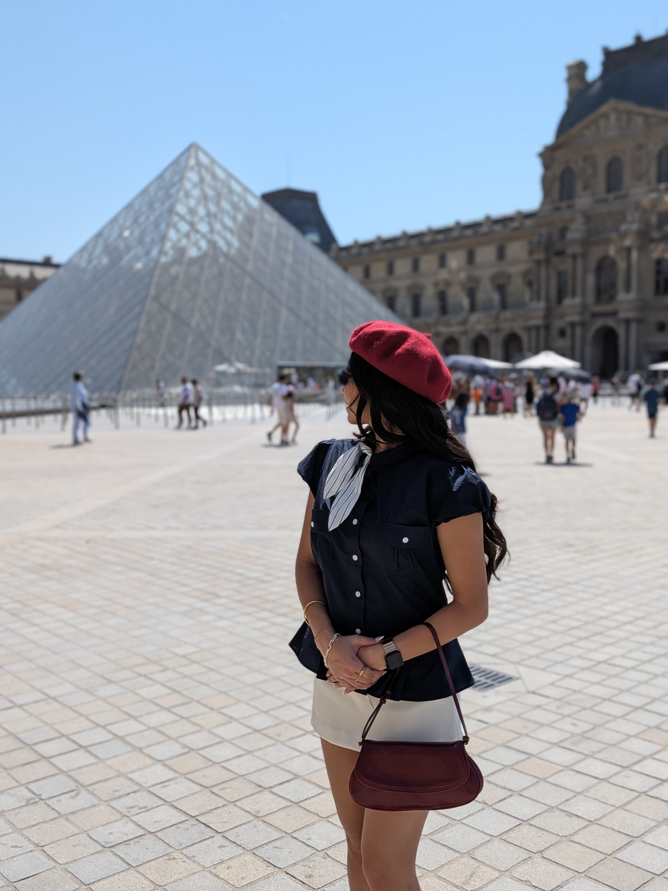
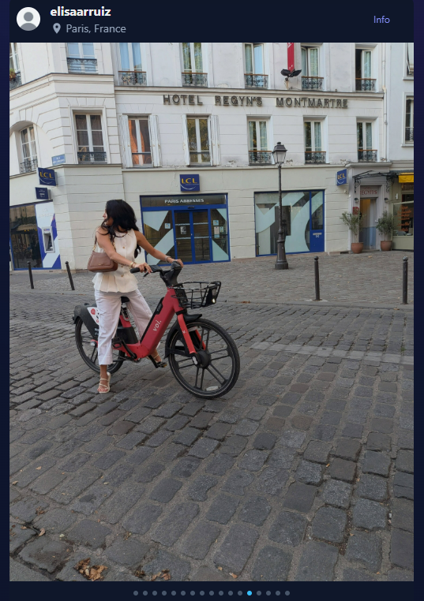
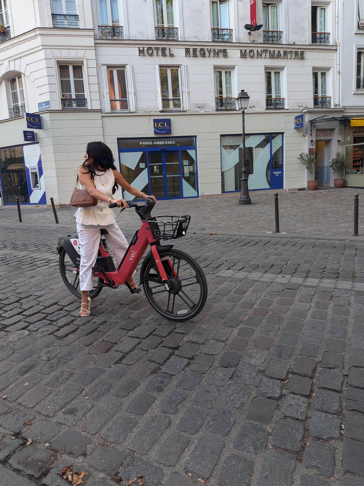
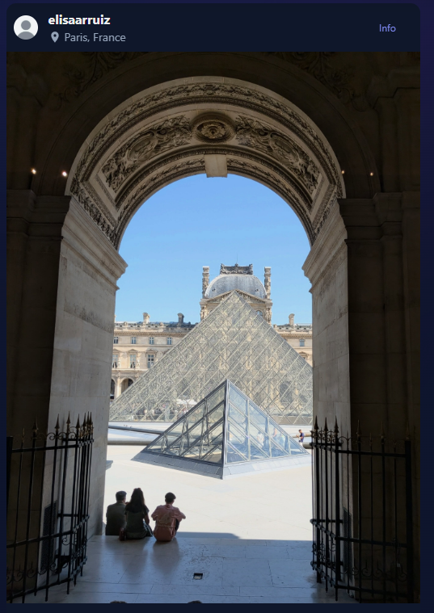
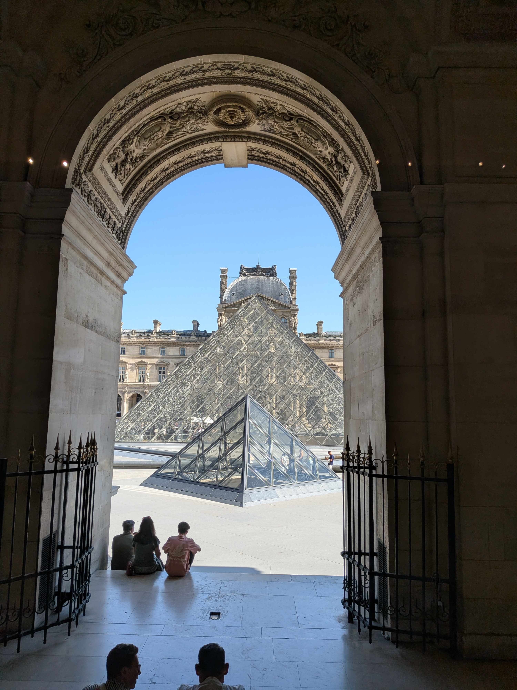
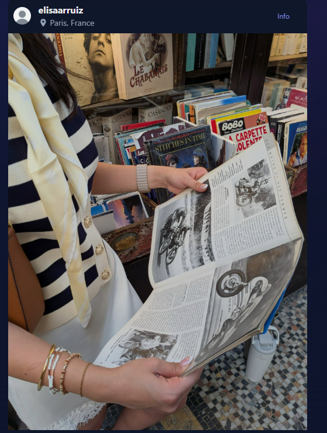
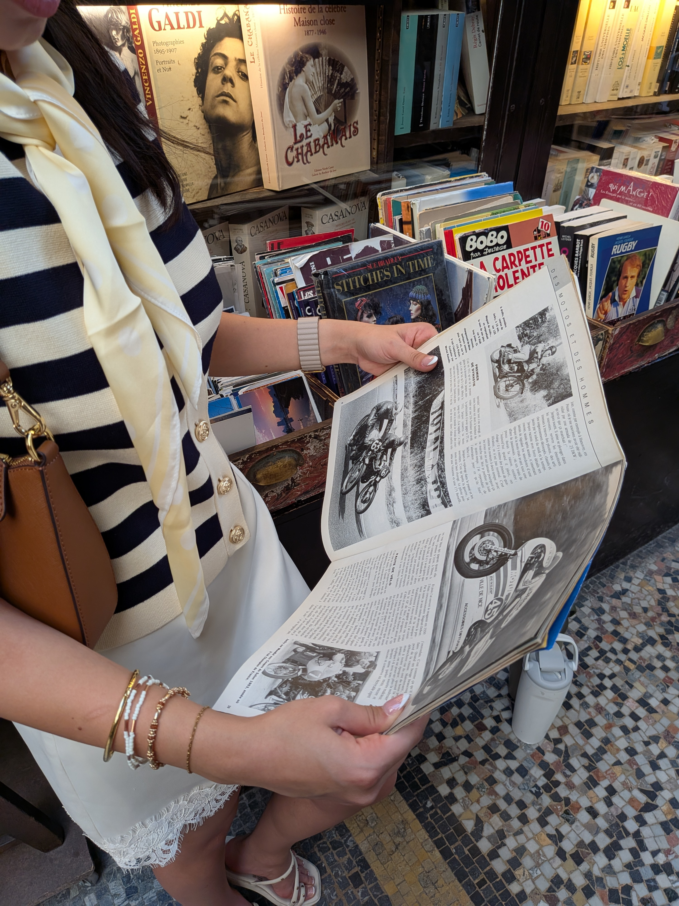
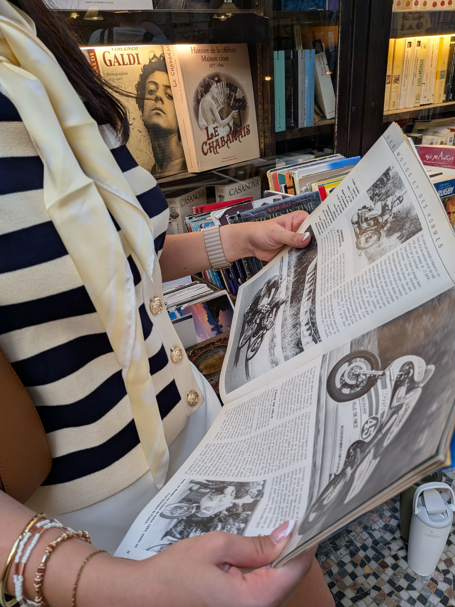

Photographer and copyright owner: Hassan A. Khalifeh
Reported account: @elisaarruiz
Reported post: https://www.instagram.com/p/DdC9DmTmZWzI6WMwIv5oTDmLN9M-wQfHnFb7VY0/
Each comparison shows the supplied Instagram screenshot and the corresponding source photograph. Exact source files, available metadata and a downloadable comparison PDF are provided. Supporting alternate photographs appear separately.
Download comparison PDF · Download source metadata and SHA-256 hashes
| Carousel image | Source | Capture metadata |
|---|---|---|
| 1 of 17: Louvre pyramid portrait | P-01 PXL_20260813_112618548.PORTRAIT.jpg | 2026:08:13 13:26:18 +02:00 |
| 13 of 17: Bicycle photograph | P-05 PXL_20260813_174908565.jpg | 2026:08:13 19:49:08 +02:00 |
| Position not visible: Louvre archway view | P-15 PXL_20260813_092429075.jpg | 2026:08:13 11:24:29 +02:00 |
| Position not visible: Open-book photograph | P-16 PXL_20260814_095326541.jpg | 2026:08:14 11:53:26 +02:00 |
The pose, hands, pyramid and background visitors correspond.


| Camera | Google Pixel 10 |
|---|---|
| Capture time | 2026:08:13 13:26:18 |
| Capture offset | +02:00 |
| GPS metadata | Present in source file |
| File bytes | 3706987 |
| SHA-256 | 3193012b31cad2edea29bafbff42eb983a85f6b60069baef5ea63345b65ee111 |
The bicycle, feet, hands, building signage and street details correspond.


| Camera | Google Pixel 10 |
|---|---|
| Capture time | 2026:08:13 19:49:08 |
| Capture offset | +02:00 |
| GPS metadata | Present in source file |
| File bytes | 4153772 |
| SHA-256 | e4c9b8be56acb805cfdca1a303f1fd61bf7c20712890e61e1540d1c9e72d1c65 |
The archway, pyramid, seated visitors and foreground figures correspond. The posted image uses a crop.


Full-resolution original source, 3000 × 4000 pixels, with embedded camera, capture time, timezone offset and GPS metadata.
| Camera | Google Pixel 10 |
|---|---|
| Capture time | 2026:08:13 11:24:29 |
| Capture offset | +02:00 |
| GPS metadata | Present in source file |
| File bytes | 3485412 |
| SHA-256 | b8ff9611db9db50296e2602795ac74dc277ffb1e73af3fd4b4d176f8168d9db1 |
The book angle, fingertips, bracelets, clothing, bottle and background books correspond. Other supplied bookstore frames show different positions.


Full-resolution original source, 3000 × 4000 pixels, with embedded camera, capture time, timezone offset and GPS metadata.
| Camera | Google Pixel 10 |
|---|---|
| Capture time | 2026:08:14 11:53:26 |
| Capture offset | +02:00 |
| GPS metadata | Present in source file |
| File bytes | 3092672 |
| SHA-256 | 4dd1f407abb24e7ddafe34b0df11e8e46960c555a146f969928a50bdd40d01b5 |
Additional photographs from the same scenes document the photographic sequence. Their individual capture fields are recorded in the metadata file.

Photographer and copyright owner: Hassan A. Khalifeh. Evidence updated October 18, 2026.